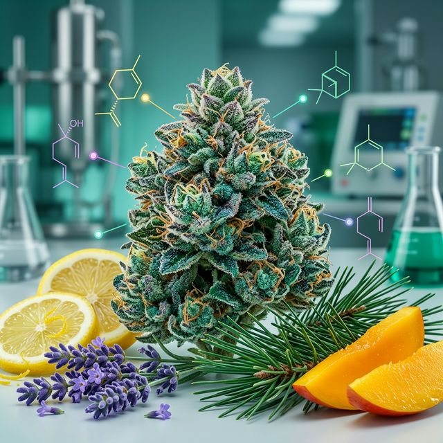

Mapa de Terpenos: A Ciência por trás do Aroma
Muito além do cheiro, os terpenos são os maestros químicos que direcionam o efeito terapêutico da Cannabis no seu organismo.

Na Cannabis medicinal, a eficácia do tratamento não depende apenas da concentração de THC ou CBD. O segredo reside no Efeito Entourage (Efeito de Entorno), onde os canabinoides e terpenos trabalham em sinergia para potencializar os benefícios e mitigar efeitos colaterais.
Abaixo, detalhamos os sete principais terpenos encontrados na planta e como eles influenciam sua saúde:
1. Mirceno (Myrcene) — O Sedativo Natural
Aroma: Terroso, herbal, com notas de cravo e manga madura.
O mirceno é o terpeno mais comum na Cannabis. Ele é conhecido por aumentar a permeabilidade da barreira hematoencefálica, o que permite que os canabinoides cheguem mais rápido ao cérebro. Seus efeitos são predominantemente relaxantes e sedativos, sendo ideal para pacientes com insônia e dores crônicas severas.
2. Limoneno (Limonene) — Foco e Humor
Aroma: Cítrico intenso, limão e laranja.
Presente também nas cascas de frutas cítricas, o limoneno é um potente ansiolítico e antidepressivo. Ele estimula a produção de serotonina e dopamina, ajudando no foco mental e na redução do estresse. É excelente para uso diurno e tratamentos psicológicos.
3. Linalol (Linalool) — A Calma da Lavanda
Aroma: Floral e doce (lavanda).
Famoso por suas propriedades anticonvulsivantes e calmantes, o linalol é um dos pilares no tratamento da epilepsia e distúrbios de pânico. Ele ajuda a modular a excitabilidade neuronal, promovendo um estado de paz profunda sem necessariamente causar sono pesado.
4. Pineno (Alpha-Pinene) — O Respirar da Floresta
Aroma: Pinheiro, agulhas de pinho e Alecrim.
O pineno é um broncodilatador natural e anti-inflamatório. Além de ajudar na respiração, ele combate a perda de memória de curto prazo (um efeito comum de doses altas de THC), mantendo o paciente alerta e concentrado.
5. Beta-Cariofileno — O Terpeno Anti-Inflamatório
Aroma: Picante, pimenta-do-reino, madeira e canela.
Este é um terpeno único: ele é o único capaz de se ligar diretamente aos receptores CB2 do sistema endocanabinoide, agindo como um "canabinoide honorário". É um dos analgésicos e anti-inflamatórios mais potentes da natureza, sendo fundamental no tratamento de artrite e doenças autoimunes.
6. Humuleno (Humulene) — Supressão Literária
Aroma: Lenhoso, terroso e com notas de lúpulo.
Ao contrário do que muitos pensam, nem toda Cannabis dá fome. O humuleno é conhecido por suprimir o apetite, além de ser um excelente antifúngico e antibacteriano tópico e sistêmico.
7. Terpinoleno (Terpinolene) — Complexidade Oculta
Aroma: Floral com toques de ervas e pinho.
Embora presente em quantidades menores, o terpinoleno é um antioxidante poderoso e possui propriedades antineoplásicas (antitumorais) em estudos preliminares. Ele oferece um relaxamento suave e uma sensação de bem-estar generalizado.
Importância Prática para o Paciente
Ao ler o certificado de análise (COA) do seu medicamento, não olhe apenas para os níveis de CBD/THC. Verifique o **Perfil de Terpenos**. Se o seu objetivo é dormir, procure variedades ricas em **Mirceno e Linalol**. Se precisa de foco para o trabalho, o **Limoneno e o Pineno** são seus melhores aliados.
Pronto para uma consulta personalizada?
Conectamos você aos melhores médicos do Brasil que entendem a ciência dos terpenos e prescrevem com precisão.
Agendar Consulta com Especialista